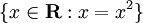

Starting Out (for real)
Erlang là một ngôn ngữ tương đối nhẹ và không phức tạp ( theo cách mà chúng ra hình dung so sánh C với C++, C ít phức tạp hơn so với C++ ). Trong chương này chúng ta sẽ tìm hiều về các kiểu dữ liêu cơ bản của Erlang. tôi khuyến khích bạn lên đọc Reading it is strongly advised as it explains the building blocks for all the programs you'll write with Erlang later on.
Term
Trong Erlang, chúng ta quy ước dữ liệu của bất kỳ kiểu dữ liệu nào được gọi là term
Dữ liệu kiểu số ( Numbers )
Trong Shell, biểu thức phải kết thúc bằng dấu chấm tiếp nối là một khoảng trắng (ngắt dòng, dấu cách etc.),
nếu không shell sẽ không ghi nhận và thực thi biểu thức đó. Đới với trường hợp bạn muón sử dụng nhiều biểu thức trong shell, bạn có thể dùng dấu
, để phân cách, nhưng kết quả hiển thị cuối cùng trong shell sẽ là biểu thức cuối cùng ( những biểu thức trước đó vẫn được thực hiện nhưng sẽ không hiển thị kết quả).
cú pháp này có thể không thông dụng đối với nhiều người bởi nó đến từ Prolog, một ngôn ngữ lập trình logic
( phiên bản khởi tạo đầu tiên của Erlang được thực hiện trong Prolog ).
Nào hãy truy cập vào chế độ shell và gõ những dòng lệnh sau ( cách truy cập shell của Erlang được mô tả trong chương trước )
1> 2 + 15. 17 2> 49 * 100. 4900 3> 1892 - 1472. 420 4> 5 / 2. 2.5 5> 5 div 2. 2 6> 5 rem 2. 1
Chú ý: Không như một số ngôn ngũ khác bạn phải tường mình kiểu dữ liệu số , Erlang không quan tâm nếu bận nhập là kiểu số thực hay là kiểu số nguyên: cả hai kiểu dữ liệu này đềù hỗ trợ khi bạn thực hiện các phép tính số học.
 Trong quá trình xử lí các phép toán ( phần lớn là số nguyên và số thực ), Erlang sẽ tự động chuyển đổi kiểu dữ liệu cho bạn.
Tuy nhiên, nếu bạn muốn thực hiện phép chia lấy phần nguyên, bạn có thể sử dụng
Trong quá trình xử lí các phép toán ( phần lớn là số nguyên và số thực ), Erlang sẽ tự động chuyển đổi kiểu dữ liệu cho bạn.
Tuy nhiên, nếu bạn muốn thực hiện phép chia lấy phần nguyên, bạn có thể sử dụng div, và đối với phép chia lấy phần dư hãy sử dụng rem.
Chý ý là chúng ta có thể sử dụng nhiều toán tử trong cùng một biểu thức và các phép tính vẫn tuân theo quy tắc toán học.
7> (50 * 100) - 4999. 1 8> -(50 * 100 - 4999). -1 9> -50 * (100 - 4999). 244950
Trường hợp bạn muốn biểu diễn kiểu số nguyên ko phải là dạng thập phân, hãy điền theo quy tắc sauBase#Value (trong đó Base là số mà muốn hiển thị dưới dạng khác thập phân vd từ 2 tới 36, Value là giá trị mà cần chuyển đổi):
10> 2#101010. 42 11> 8#0677. 447 12> 16#AE. 174
Thật Tuyện vời! Erlang has the power of the calculator you have on the corner of your desk with a weird syntax on top of it! Hoàn toàn thú vị!
Giá trị bất biến
Thực hiện các phép tính số học thì đơn giản không có gì phức tạp, nhưng để thực hiện nhiều phép tính cùng những biểu thức phức tạp chúng ta cần phải lưu trữ các kết quả lại. Do đó chung ra cần sử dụng tới các biến. néu như bạn đọc phần giới thiệu của cuốn sách này, bạn cũng biết là trong lập trình hàm , giá trị của biến là không được phép thay đổi. các hành vi cơ bản của một biến có thể được xác định bằng ̃7 biểu thức dưới đây ( lưu ý: trong Erlang tên biến luôn bắt đầu bắt chũ viết hoa ở đầu từ):
1> One. * 1: variable 'One' is unbound 2> One = 1. 1 3> Un = Uno = One = 1. 1 4> Two = One + One. 2 5> Two = 2. 2 6> Two = Two + 1. ** exception error: no match of right hand side value 3 7> two = 2. ** exception error: no match of right hand side value 2
Đầu tiên, các dòng lệnh trên nói cho chúng ra biết rằng có thể gán một giá trị tới một biến; sau khi biến đã được gán giá trị, bạn có thể 'vờ' đi nếu như bạn gán lại gán giá trị cho biến đó
với giá trị mới bằng với giá trị đã gán trước đó . Nhưng nếu đó là một giá trị khác, Erlang sẽ ngay lập tức thông báo lỗi. đấy là một nhận xét chính xác,
sẽ có một chút phúc tạp để giải thích cho điều này và phụ thuộc vào cách sử dụng toán tử =
.Trong Erlang khác với các ngôn ngữ khác, toán tử = được sử dụng để so sánh hai giá trị với nhau và sẽ thông báo lỗi nếu giá trị của chúng là khác nhau. Còn nếu chúng cùng giá trị, nó sẽ trả về kết quả của giá trị đó:
8> 47 = 45 + 2. 47 9> 47 = 45 + 3. ** exception error: no match of right hand side value 48
Trong phép so sánh =, điều gì sẽ xảy ra nếu một biến nhánh bên trái chưa được gán bất kỳ một giá trị nào so sánh với một biến hay một giá trị ở nhánh bên phải
, Erlang sẽ tự động gán giá trị ở nhánh bên phải tới biến ở nhánh bên trái. Kêt quả là phép so sánh này hoạt động mà không có bất kỳ lỗi nào đồng thời biến sẽ lưu trữ giá trị trong bộ nhớ.
Trong Erlang và nhiều ngỗn ngữ lập trình hàm khác, hoạt động của toán tử = cơ bản được gọi dưới tên là 'khớp mẫu (Pattern matching)', mặc dù vậy trong Erlang, cách thức hoạt đông của khớp mẫu thường linh hoạt và hoàn chỉnh hơn một số ngôn ngũ khác. Trong các chương sau, chúng ta sẽ đi sâu và tìm hiểu chi tiết hơn cách thức hoạt động của khớp mẫu với kiểu dữ liệu bộ ( tuple ), danh sách ( list ) và hàm ( function ).
Quay lại với 7 biểu thức thức phía trên, ở lệnh cuối cùng ( lệnh thứ ̃7 ) nếu bạn chú ý tên biến, bạn sẽ thấy trong Erlang tên biến phải được đặt tên bắt đầu bằng một chữ in hoa. . Câu lệnh cuối cùng sai và Erlang báo lỗi bởi vì tên bién two bắt đầu bởi chũ in thường. Dưới góc nhìn kỹ thuật, các biến có thể bắt đầu bởi một dấu gạch dưới ('_'), nhưng theo quy ước việc sử dụng chúng sẽ giới hạn ở các giá trị mà bạn không quan tâm tới tuy nhiên bạn cảm thấy nó cần phải ghi lại những gì nó chứa.
Bạn cũng có thể có các biến chỉ có duy nhất chứa một ký tự gạch dưới:
10> _ = 14+3. 17 11> _. * 1: variable '_' is unbound
Tuy nhiên không giông với bất kỳ các loại biến thông thường, nó sẽ không lưu trữ bất kỳ giá trị nào. Bạn sẽ cảm thấy lạ là nếu không sử dụng để gán biến thì cần gì phải dùng và nhin chung chả có ích gì, tuy nhiên trong các chương sau bạn sẽ thấy nó rất hữu ích khi kết hợp cùng khớp mẫu.
Chú ý: Vì trong Erlang hay thao tác trong Shell chỉ cho phép một biến được lưu trữ giá trị một lần duy nhất tuy nhiên bạn có thể 'xóa' giá trị của biến đã lưu trữ đó
bằng cách sử dụng hàm f(Variable). ( Varialbe là tên của biến đó ). Còn nếu bạn muốn xóa giá trị của tất cả các biến , hãy dùng hàm f()..
Các hàm này sẽ chỉ hoạt động trong Shell. Cón đối với một chương trình thực tiễn, chúng ta sẽ không thể hủy các giá trị bằng các hàm theo cách mà chúng ta sử trong Shell. Bạn có biết rằng việc áp dụng Erlang trong thực tiễn: Shell có thể hoạt động xuyên suốt nhiều năm mà không hề bị ngừng hay gián đoạn... Và cá rằng một biến X có thể sủ dụng nhiều hơn một lần trong thời gian dó.
Atoms
Trong phần này chúng ta sẽ biết lí do vì sao tên của một biến trong Erlang không thể bắt đầu bằng một chữ in thường, trong Erlang chúng được sử dụng cho một kiểu dữ liệu gọi là 'atoms'. Atoms là một kiểu dữ liệu thuộc literals, constants ( một kiểu dữ liệu mà giá trị cố định không đổi ) và tên của nó cũng hiển thị chính giá trị của nó. những gì bạn nhìn thấy sẽ là nhưng gì bạn nhận được, thật vậy nếu một atom có tên là cat thì giá trị của nó chỉ là "cat". Bạn không thể làm gì khác như việc thay đổi giá trị của atom hay làm một điều gì đó ảnh hưởng tới atom đó cả.
Ngoài việc sử dụng một chữ cái đơn in thường để bắt đầu tên của một atom, cũng có một số cách viết khác:
1> atom. atom 2> atoms_rule. atoms_rule 3> atoms_rule@erlang. atoms_rule@erlang 4> 'Atoms can be cheated!'. 'Atoms can be cheated!' 5> atom = 'atom'. atom
một atom lên được để trong dấu nháy đơn (') nếu nó không bắt đầu bởi một ký tự in thường hay nó chưa một số ký tự dạng số hoặc ký tự đặc biêt như
ký tự gạch dưới (_), ký tự @.
đặc biệt như bạn nhìn thấy ở biêủ thức số 5 sẽ thấy một atom được đặt trong cặp dấu nháy đơn so với atom không có dấu nháy đơn là như nhau.
I compared atoms to constants having their name as their values. Bạn có thể đã từng làm việc với các đoạn mã sử dụng hắng số ( constants ) ví dụ như: tôi có các giá trị cho màu của mắt:

BLUE -> 1, BROWN -> 2, GREEN -> 3, OTHER -> 4. Như ví dụ bạn sẽ cần phải khớp các tên của các mỗi hằng ứng với mỗi giá trị. tuy nhiên với atoms cho phép bạn quên các giá trị cần khớp đó đi: đơn giản mỗi atom là ứng với một màu măt như
'blue', 'brown', 'green' and 'other'. các màu này ( atoms ) có thể được sử dụng ở bất cứ đoạn mã nào: và chúng sẽ không bị xung đột
và không thể được coi như một hằng số hay biến không xác đinh! Còn nếu bạn vẫn muốn sử dùng các hằng số này với một biến liên kết với mỗi hằng số
chúng ta có thể sử dụng module tuy nhiên bây giờ chưa phải lúc, chúng ta sẽ đi sâu hơn vấn đề này trong chapter 4 (Modules).
Một atom chủ yếu được sử dụng để diễn đạt hay bổ trợ cho cặp dữ liệu liên kết với nó. các atom rất khó để sử dụng độc lập. Đó là lí do vì sao dùng ta sẽ không danh nhiều thời gian dể thảo luận về nó; và sẽ tốt nhất là sử dụng để kết hợp cùng các kiểu dữ liệu khác, ở các phần sau bạn sẽ thấy lợi ích của việc dùng atom.
Don't drink too much Kool-Aid:
Atoms thực sự hữu ích trong việc truyền thông điệp ( message ) hay dùng như một hằng số. Tuy nhiên có một số rủi ro khi lạm dụng atom vd như:
ta sử dụng atom ứng một một giá trị "atom table", nó sẽ chiếm 4 bytes/atom trong một hệ thống 32-bit và 8 bytes/atom trong đối với hệ thống ̉64-bit, đặc biệt khi một atom được tạo ra
nó sẽ tồn tại trong suốt chương trình và bộ dọc rác ( garbage collected ) sẽ không xử lí
an atom is referred to in an "atom table" which consumes memory (4 bytes/atom in a 32-bit system, 8 bytes/atom in a 64-bit system).
Do đó các atom sẽ tồn tại cho tới khi vượt quá giới hạn tài nguyên của hệ thống hay vượt 1048577 só lượng atom được khai báo đối với mỗi ứng dụng, chương trình.
Do đó chúng ta không lên lạm dụng việc sinh tự động atom với bất kỳ lí do; Nếu hệ thống của bạn ổn định an toàn, và cho phép người dùng nhập để tạo ra nhiều atom, bạn sẽ gặp rắc rối lớn. Do đó thành thật mà nói, atom chỉ lên dược sử dụng như một công cụ cho lập trình viên.
Chú ý: Có một số từ riêng không thể sử dụng như một atom, đó là ý định của nhà thiết kế ngôn ngữ vd: tên hàm (function names ), toán tử ( operators ), biểu thức ( expressions ), etc. đó là:
after and andalso band begin bnot bor bsl bsr bxor case catch cond div end fun if let not of or orelse query receive rem try when xor
Đại số Boolean và toán tử so sánh
mọi thứ sẽ trửo lên rắc rối nếu một người không thể diễn tả được sư khác nhau giữa cái gì là nhỏ, cái gì là lớn, cái gì đúng và sai. Như bất kỳ ngôn ngữ nào, Erlang cũng cho phép bạn sử dụng các phép toán boolean và các phép toán so sánh.
Đại số boolean rất đơn giản:
1> true and false. false 2> false or true. true 3> true xor false. true 4> not false. true 5> not (true and true). false
Chú ý: các toán tử boolean như and và or sẽ luôn xét cả hai nhánh trái và phải của toán tử ( biểu thức )
. Nếu bạn muốn rút gọn (chỉ cần xét giá trị đối số ở nhánh phải nếu cần ), hãy dùng andalso hay orelse.
phép so sánh bằng hay không bằng trong Erlang có khác biệt về ký hiệu hơn so với các ngôn ngữ khác:
6> 5 =:= 5. true 7> 1 =:= 0. false 8> 1 =/= 0. true 9> 5 =:= 5.0. false 10> 5 == 5.0. true 11> 5 /= 5.0. false
Trước tiên, nếu trong một số ngôn ngữ thông dụng thường sử dụng toán tử == và != để kiểm tra tính bình đẳng trong một phép so sanh , thì trong Erlang chúng ta se sử
dụng =:= và =/=. Ba biểu thưc cuối (từ dòng 9 tới 11) cũng giới thiệu cho chúng một lưu ý:
như chương trước đề cập, Trong số học Erlang không quan tâm tới sự khác biệt giữa kiểu số thực và kiểu số nguyên,
Do đó bạn cũng không phải bận tâm khi thực hiện trong phép so sánh nhưng, cả toán tử == và /= đều có thể giúp bạn xử lí.
Và hãy ghi nhớ nó bất kể bạn muốn so sánh chính xác bằng hay không bằng nhiên.
Tương tự Erlang cũng hỗ trợ các toán tử sánh khác như < (nhỏ hơn), > (lớn hơn ), >= (lớn hơn hoặc bằng) and =< ( nhỏ hơn hoặc bằng).
tuy vậy có một điều tụt hậu ( theo quan điểm cá nhân ) và là nguyên nhân của rất nhiều lỗi cũ pháp trong đoạn mã của tôi. Hãy chú tới toán tử =<.
12> 1 < 2. true 13> 1 < 1. false 14> 1 >= 1. true 15> 1 =< 1. true
Điều gì sẽ xảy ra khi ta gõ 5 + llama hay 5 == true?
Không có gì tốt hơn là việc thử nó, hãy thử gõ vào trong Shell, ngay sau đó bạn sẽ nhận được những dòng thông báo lỗi!
12> 5 + llama.
** exception error: bad argument in an arithmetic expression
in operator +/2
called as 5 + llama
Welp! Erlang không thực sự muôn bạn dùng sai một kiểu dữ liệu cơ bản!
Trình mô phỏng của nó sẽ trả về một dòng thông báo lỗi. nó cho chúng ta biết một trong hai đối số sử dụng vói toán tử
+ có vấn đề
tuy nhiên không phải lúc nào Erlang cũng sẽ nhận diện để nhắc bạn về việc sử dụng sai kiẻu dữ liệu, trong trường hợp này:
13> 5 =:= true. false
Vì sao trông một số phép toán Erlang từ chối việc sử dụng kiểu dữ liệu khác nhau nhưng một số thì không? mặc dù Erlang không cho phép bạn cộng hai kiểu dữ liệu khác nhau lại, nhưng nó lại cho phép bạn so sánh giữa chúng. Đây là bởi vì những người tạo ra Erlang nghĩ rằng tính thực tiễn sẽ tốt hơn là lý thuyết và quyết định điều This is because the creators of Erlang thought pragmaticism beats theory and decided it would be great to be able to simply write things like general sorting algorithms that could order any term. It's there to make your life simpler and can do so the vast majority of the time.
Một điều cuối cùng cần ghi nhớ khi làm việc với đại số boolean và phép so sánh là:
14> 0 == false. false 15> 1 < false. true
Có lễ bạn đang vò đầu bứt tóc nếu bạn tới từ một ngôn ngữ hướng thủ tục hay hướng đối tượng. Dòng 14 đáng lẽ lên trả về kết quả là true và dòng 15 là false! Bởi vì, chứng ta thường quy ước false có nghĩa là 0 và true là mọi thứ còn lại! ngoài trừ Erlang. Bởi vi tôi đã lừa bạn, Thật vậy, tôi đã làm thế và tôi cảm thấy thật xấu hổi.
Trong Erlang không hề có hề có giá trị boolean như true hay false. chúng đơn giản chỉ atom true và atom false, nhưng chúng được tích để đủ dùng với ngôn ngữ do đó bạn sẽ không có bất kỳ vấn đề nào miễn là bạn không nghĩ rằng false và true có nghĩa là mọi thứ trừ false và true .
Chú ý:thứ tự ưu tiên của mỗi phần tử trong phép so sánh được sắp sau như sau The:
number < atom < reference < fun < port < pid < tuple < list < bit string
tại thời này này có thể bạn không biết hết tất cả các kiểu dũ liệu liệt kê ở trên nhưng đừng lo lắng, chúng ta sẽ được biết chúng trong các phần tiếp theo của cuốn sách. Nhưng hãy nhớ rằng đó là lí do vì sao bạn có thể soi sánh mọi thứ với nhau You don't know all these types of things yet, but you will get to know them through the book. Just remember that this is why you can compare anything with anything! trích dẫn câu nói của To quote Joe Armstrong, một trong nhưng người tạo lên ngôn ngữ Erlang: " thứ tự thực sự không quan trọng - nhưng điều quan trong là phải xác định được thứ tự toàn phần"
Bộ ( Tuples )
Bộ là một cấu trúc dữ liệu thuộc kiểu dữ liệu phức hợp
mà trong đó nó được tổ chức dưới dạng một số lượng nhất định các kiểu dữ liệu khác nhau ( term ).
Trong Erlang, bộ được viết theo công thức {Element1, Element2, ..., ElementN}.
như ví dụ, giả sử bạn đưa tôi một tọa độ (x,y) thể hiện cho một điểm trên đồ thị Cartesian.
Chúng ta có thể biểu diễn điểm đó dưới dạng bộ như sau:
1> X = 10, Y = 4.
4
2> Point = {X,Y}.
{10,4}
Trong trường hợp này, một điểm sẽ luôn luôn được biểu diễn dưới dạng hai term. Thay vì dùng hai biến X và Y,
và bạn chỉ phải lưu trữ trong một bộ. tuy vậy, giả sử nếu tôi có một điểm nhưng chỉ muốn lấy tọa độ X của điểm đỏ ?
điều đó khá đơn giản, hãy nhớ lại lúc trước khi ta gán biến với các giá trị, Erlang sẽ không thông báo lõi nếu chúng có cùng giá trị cũng như gán giá trị đó cho một biến nhiều lần.
Nào hãy thử trên Shell và tận dụng điều đó, có thể bạn sẽ cần sử dụng f() để xóa các biến đã được gán trước đó trong Shell.
3> Point = {4,5}.
{4,5}
4> {X,Y} = Point.
{4,5}
5> X.
4
6> {X,_} = Point.
{4,5}
Từ giờ trở đi, chúng ta có thể sử dụng biến X để truy xuất thông tin phần tử đầu tiên của một bộ!
Điều đó xử lí như thế nào?
 Đầu tiên, biến X và Y phải là các biến không ràng buộc tức chúng không chứa hay nói cách khác là chưa được gán tói bất kỳ giá trị nào.
Sau đó ta sẽ đặt chúng vào trong một bộ {X,Y} và đật chúng ở nhánh bên trái của toán tử
Đầu tiên, biến X và Y phải là các biến không ràng buộc tức chúng không chứa hay nói cách khác là chưa được gán tói bất kỳ giá trị nào.
Sau đó ta sẽ đặt chúng vào trong một bộ {X,Y} và đật chúng ở nhánh bên trái của toán tử =,
tiếp đó toán tử = sẽ so sánh hay cả hai giá trị ở hay nhánh: {X,Y} so với {4,5}.
Erlang đủ thông minh để unpack các giá trị từ bộ tới các biến chưa được rang buộc ở nhánh bên trái.
Cuối cùng kết quả của phép so sánh này chỉ đơn gian là việc so sánh {4,5} = {4,5}, nhin vào kết quả ra thấy chúng khớp nhau, như phép so sánh
này đúng, không có bất kỳ lỗi nào , theo như phần trước đề cập , giá trị sẽ được hiển thị trên Shell!
Đó là một trong nhiều dạng sử dụng của khớp mẫu.
chú ý ở biểu thức 6, tôi đã sử dụng một biến ẩn danh tức _. Ý nghĩa của việc sư dụng này là chúng ra sẽ không sử dụng và bỏ qua giá trị đó khi so sánh. biến _ luôn được coi như một biến không ràng buộc và hoạt động như một wildcard trong khớp mẫu. Khớp mẫu sẽ chỉ unpack bộ khi số lượng phần tử ở hai nhánh là như nhau ( tức độ dài của 2 nhánh ).
7> {_,_} = {4,5}.
{4,5}
8> {_,_} = {4,5,6}.
** exception error: no match of right hand side value {4,5,6}
bộ cũng có thể sử dụng để làm việc cùng với một giá trị đơn. Nó hoạt động như thế nào ? Chúng ta có thể nhin cách hoạt động qua vd về nhiệt độ:
9> Temperature = 23.213. 23.213
Tuyệt, thời tiết thật là mát mẻ, nhiệt độ này rất thích hợp để đi tắm biển... Nhưng đợi chút, đây là nhiệt độ theo đơn vị Kelvin, vậy còn đơn vi Celsius hay đơn vị Fahrenheit?
10> PreciseTemperature = {celsius, 23.213}.
{celsius,23.213}
11> {kelvin, T} = PreciseTemperature.
** exception error: no match of right hand side value {celsius,23.213}
Oh có lỗi xảy ra, nhưng nó chính xác là những gì chúng ta cần!
hãy xem xét khớp mẫy hoạt động ở vd trên, toán tử = sẽ so sánh {kelvin, T} với {celsius, 23.213}:
thậm chí nếu biến T chưa được ràng buộc, nhưng trong vd này có sự khác nhau giữa hai atom và Erlang sẽ ko ghi nhận celsius atom kelvin
atom when comparing them. một ngoại lệ sẽ được ném ra và dừng đoạn mã thực thi lại , bằng cách làm này
một phần của chương trình sẽ mà chúng ta dự kiến trong nhiêt kế Kelvin sẽ không thẻ tiếp tục xử lí trong nhiệt kế Celsiou.
Việc đưa ra lỗi như vậy sẽ làm cho lập trình viên dễ dàng biết được những gì đang xử lí, gửi đi và có lợi hơn cho việc gỡ lỗi.
Một bộ chưa một atom và một phân tử tiếp sau nó được gọi là 'tagged tuple'. trong đó phần tử có thẻ thuộc bất kỳ kiểu dữ liệu nào hay thậm chú là một bộ khác.
12> {point, {X,Y}}.
{point,{4,5}}
Tuy nhiên trong trường hợp chúng ta có nhiều hơn một điểm chúng ta sẽ phải làm thê nào ?
Kiểu Danh sách ( Lists ) !
Dánh sách được coi thánh phần cơ bản nhất ( bread and butter ) trong rất nhiều ngôn ngữ lập trình hàm. Chúng thường xuyên được sử dụng để giải quyết tất cả các vấn đề và không càn phải nghi nghờ gì vì nó là cấu trúc dữ liệu được sử dụng nhiều nhất trong Erlang. Danh sách có thể chứa các kiểu dữ liệu sau. Lists can contain anything! Numbers, atoms, tuples, other lists; your wildest dreams in a single structure. The basic notation of a list is [Element1, Element2, ..., ElementN] and you can mix more than one type of data in it:
1> [1, 2, 3, {numbers,[4,5,6]}, 5.34, atom].
[1,2,3,{numbers,[4,5,6]},5.34,atom]
Vd rất dễ hiểu, đúng ko ?
2> [97, 98, 99]. "abc"
Uh oh! đấy là một trong những điều tôi không thích ở Erlang: chuỗi ( strings )! kiểu dữ liệu chuỗi bản chất cũng là một danh sách! Vì sao mà mọi người ghét nó ? bởi vì:
3> [97,98,99,4,5,6]. [97,98,99,4,5,6] 4> [233]. "é"
như bạn thấy Erlang sẽ chỉ hiển thị ra danh sách các số nếu nhưng có bất kỳ một số nào không phải là nằm trong kiểu dữ liệu chuỗi hay nói cách khác số đó không thuộc mã của một ký tự ( bạn có thể xem bảng mã ascii để biêt thêm chi tiêt ). Chính vì sự rắc rối này mà có thể khiến bạn ghet ngôn ngữ này trong tương lai, Mặc dù vậy, sẽ có một một cách khác để viêt chuỗi và chúng ta sẽ tìm hiểu nó trong các phần sau của chương này.
Don't drink too much Kool-Aid:
Đó là lí do vì sao bạn từng nghe nói rằng Erlang rất tồi trong việc xủ lí chuỗi: Nếu bạn biết các ngôn ngữ khác bạn sẽ thấy không có sẵn một thư viên h
ay module xử lí chuỗi nào giống vậy cả. Một phần lí do là bởi vì ban đâu Erlang là ngôn ngữ được thiết bởi một công ty làm về viễn thông và họ hầu như không bao giờ ( hiếm )
xử dụng kiểu dữ liệu chuỗi, do đó họ cảm thấy không cần phải thêm nó vào thư chính chính cả.
tuy nhiên, hầu hết vấn đề thiếu hụt trong việc xử lí chuỗi này cũng được cật nhập theo thời gian: và giờ máy ảo cũng hỗ trợ unicode,
và hơn nữa việc xử lí chuỗi cũng nhanh hơn tỉ lệ thuận theo thời gian cật nhập các phiên bản.
Có một cách khác là lưu trữ chuỗi dươi dạng cấu trúc nhị phân, việc làm này sẽ khiến chúng thực sự nhẹ và nhanh hơn. Nói chung, vẫn có thiếu sót một số chức năng trong bộ thư viện chuẩn của Erlang nhưng vẫn có thể xử lí được trong Erlang, và nếu có ý định ý xủ lí chuỗi với số lượng lớn thì một số ngôn ngữ khác như Perl hay Python sẽ làm tốt hơn.
Để gộp các danh sách lại với nhau, chúng ta sử dụng ++. ngược lại của ++ là --, nó sẽ loại bỏ các phần tử từ một danh sách:
5> [1,2,3] ++ [4,5]. [1,2,3,4,5] 6> [1,2,3,4,5] -- [1,2,3]. [4,5] 7> [2,4,2] -- [2,4]. [2] 8> [2,4,2] -- [2,4,2]. []
Cả hay toán tử ++ và -- đều là toán tử right-associative. Tức là một số thao tác với -- hay ++ đều có thể dùng và sẽ được thực hiện theo thứ tự từ phải sang trái, như trong ví dụ sau:
9> [1,2,3] -- [1,2] -- [3]. [3] 10> [1,2,3] -- [1,2] -- [2]. [2,3]
Tiếp tục nhìn vào vd tiếp theo. Coi phần tử đầu tiên của danh sách là Head, phần những phần tử còn lại trong sách sách là Tail. Chúng ra sẽ có các hàm xây dựng sẵn (built-in functions (BIF)) tương ứng để lấy dữ liệu.
11> hd([1,2,3,4]). 1 12> tl([1,2,3,4]). [2,3,4]
Chú ý: các hàm xây dựng sẵn thướng là những hàm bạn không thể định nghĩa trong Erlang, bởi vì chung
là những hàm đã được định nghĩa trong C hay trong trong bất cứ ngôn ngữ nào mà đã xây dựng lên Erlang ( như Prolog trong thâp niên ́80).
Mặc dù vẫn có một số hàm có thể định nghĩa được nhưng nó vẫn lên sử dụng những hàm từ C đẻ đạt được tốc độ tốt nhất.
Một vd đó là hàm length(List), nó nhận một đối số là một danh sách và sẽ trả về độ dài của một danh sách đó.
Trong danh sách việc truy câp hay thêm vào đầu danh sách thì thường nhanh và hiệu quả: vì hầu hết trong các ứng dụng, khi thao tác với danh sách, bạn sẽ thường luôn thao tác với phần tử đầu tiên ( phần đầu - head ) của danh sách. Vì phần đầu được xử dụng thương xuyên trong danh sách, do đó cùng với việc áp dụng khớp mẫu, có một cách đơn giản hơn để phân tách giữa phân đầu và những phần còn lại ( phần đuôi - tail ) của danh sách: code>[Head|Tail]. Đây là vd về cách bạn sẽ thêm một phần tử mới vào đầu danh sách:
13> List = [2,3,4]. [2,3,4] 14> NewList = [1|List]. [1,2,3,4]
Khi thao tác xử lí với kiểu dữ liệu danh sách, bạn thường xuyên bát đầu từ phần đầu, và bạn muốn một cách nhanh nhất để lưu trữ phần đuôi lại cho các thao tác sau này. hãy nhớ cách mà chúng ta đã thao tác với bộ cùng với khớp mẫu trước đó để unpack các giá trị của một điểm ({X,Y} , vì thế bạn biết là chúng ta có sẽ lấy đầu ( head ) và phần đuôi ( tail ) như sau.
15> [Head|Tail] = NewList. [1,2,3,4] 16> Head. 1 17> Tail. [2,3,4] 18> [NewHead|NewTail] = Tail. [2,3,4] 19> NewHead. 2
toán tử | , nói cho chúng ta we used is named the cons operator (constructor). In fact, any list can be built with only cons and values:
20> [1 | []]. [1] 21> [2 | [1 | []]]. [2,1] 22> [3 | [2 | [1 | []] ] ]. [3,2,1]
từ ví dụ trên ta có thể ta có thẻ xây dựng kiểu dữ liệu danh sách dựa theo công thức sau: [Term1| [Term2 | [... | [TermN]]]]....
Có thể sử dụng đệ quy để định nghĩa danh sách như của một kết hợp của phần đầu đứng và phần duổi, tức là một phàn đầu và sau theo nó là nhiều phần đâu khác
. Theo nghĩa này chúng ta có thể hình dung một danh sách giống như một con giun đẩt: bạn có thể cắt đôi nó , ta sẽ có hai con giun , tiếp đó cứ cắt đôi cho tới khi không còn gì để cắt.

Cái cách mà danh sách được xây dựng có thể khiến một số người có thể nhầm lẫn khó hiểu, nhất là với những người thường không sủ dụng cấu trúc khởi tạo danh sách. Để giúp nắm vững khái niệm này hãy chịu khó đọc và luyện tập tất cả các mẫu vd trong chương này:
[a, b, c, d] [a, b, c, d | []] [a, b | [c, d]] [a, b | [c | [d]]] [a | [b | [c | [d]]]] [a | [b | [c | [d | [] ]]]]
Với sự hiểu biết này, bạn có thể giải quyết cùng với gộp danh sách ( list comprehensions ).
Chú ý: sử dụng biểu mẫu như [1 | 2] sẽ nhận được danh sách được gọi là danh sách không thích hợp ('improper list').
danh sách không thích hợp sẽ dùng khi bạn thao tác cùng với khớp mẫu như [Head|Tail],
và nó sẽ sau nếu sử dụng cùng với các hàm thư viện chuẩn của Erlang (thậm chỉ kể cả hàm length()).
Đó là bởi vì Erlang coi một danh sách thích hợp phải là một danh sách kêt thúc bằng một danh sách rỗng.
vd khi khai báo cùng với một danh sách như [2], nó sẽ tự động định dạng đúng cách. Vd như [1|[2]]!
đối với biểu mẫu của danh sách không thích hợp như ở trên, mặc dù vẻ mặt cú pháp không sai, nhưng nó rất giới hạn sử dụng bên ngoài cấu trúc dữ liệu do người dùng định nghĩa.
Gộp danh sách ( List Comprehensions )
Gộp danh sách ( List comprehensions ) là một cách khác để tạo hay chỉnh sửa một danh sách. Nó cũng khiến cho việc viết các đoạn mã trong chương trình trở lên ngắn ngọn và dễ hiểu hơn khi so sánh với một số các thao tác với danh sách khác. Nó dựa trên ý tưởng của một tập các ký hiệu trong toán học; nếu if you've ever taken mathematics classes with set theory or if you've ever looked at mathematical notation, you probably know how that works. Set notation basically tells you how to build a set by specifying properties its members must satisfy. List comprehensions may be hard to grasp at first, but they're worth the effort. They make code cleaner and shorter, so don't hesitate to try and type in the examples until you understand them!
Đây là một ví dụ liệt kê của một tập các ký hiểu toán học .
Tập các ký hiệu đó nó cho chúng ta biết kêt quả của một số thuộc tập hợp số thực và kết quả giá trị bằng bình phương của giá trị gôc.
Do Kết quả của tập đó sẽ là {0,1}. một ví dụ khác, ngắn gọn là đơn giản hơn: {x : x > 0}.
Kết quả cần tìm ở đây là danh sách những số có giá trị dương với điều kiện là x > 0.
Gộp danh sách là một cách để xây dựng một tệp hay danh sách từ một tệp hay danh sách khác
. ví dụ đưa vào một tập ký hiệu toán học như sau {2n : n in L} trong đó L là danh sách vd như [1,2,3,4], trong Erlang sẽ thực hiện như vd dưới đây:
1> [2*N || N <- [1,2,3,4]]. [2,4,6,8]
Dễ nhận thấy các ký hiệu toán học khi chuyển sang Erlang không có nhiều thay đổi.
cặp ngoặc nhọn ({}) sẽ chuyển thành cặp ngoặc vuông ([]), dấu (:) chuyển thành hai ký tự đường ống (||) và từ 'in' sẽ chuyển thanh dấu mũi tên (<-)
. Về mặt logic chúng ta không thay đổi bất kỳ điều gì thay vào đó chúng ta chỉ thay đổi biểu tượng, ký hiệu.
trong vd trên thì mỗi một giá trị của danh sách [1,2,3,4] là một giá trị được tuần tự khớp với N.
ký tự mũi tên có tác dụng giống như toán tử = , ngoại trừ việc nó sẽ không ném ra ngoại lệ.
bạn cũng có thể thêm điều kiện giới hạn cho list comprehension bằng cách sử dụng đại số boolean đối với kêt quả trả về giá trị. vd nếu chúng ta muốn tìm tất cả các số chẵn trong một danh sách từ 1 tới 10 ta có thể viết như sau:
2> [X || X <- [1,2,3,4,5,6,7,8,9,10], X rem 2 =:= 0]. [2,4,6,8,10]
Trong đó X rem 2 =:= 0 sẽ kiểm tra xem một số có phải là số chẵn hay không.
Trong thực tế khi áp dụng, chúng ta thường áp dụng một hàm đối với mỗi phần tử của danh sách, giới hạn nó,... . Ví dụ, giải sử chúng ta có một nhà hàng, một người khác vào ăn,
anh ta sẽ hỏi bồi bàn thực đơn, nếu anh ta biết giá của tất các món ăn, giả sử chúng có giá từ $3 tới $10 kèm thuế 7%
Practical applications come when we decide we want to apply a function to each element of a list, forcing it to respect constraints, etc. As an example,
say we own a restaurant. A customer enters, sees our menu and asks if he could have the prices of all the items costing between $3 and $10 with taxes (say 7%).
3> RestaurantMenu = [{steak, 5.99}, {beer, 3.99}, {poutine, 3.50}, {kitten, 20.99}, {water, 0.00}].
[{steak,5.99},
{beer,3.99},
{poutine,3.5},
{kitten,20.99},
{water,0.0}]
4> [{Item, Price*1.07} || {Item, Price} <- RestaurantMenu, Price >= 3, Price =< 10].
[{steak,6.409300000000001},{beer,4.2693},{poutine,3.745}]
Chắc bạn đã hiểu được vấn đề ở đây, các phần thập phân của những giá trị trên không được làm tròn để có thể dễ dàng đọc.
vì thế công thức của list comprehensions thường được sử dụng như sau NewList = [Expression || Pattern <- List, Condition1, Condition2, ... ConditionN].
Trong đó Pattern <- List là ký hiệu cho một biểu thức Generator. và bạn có thể có nhiều hơn một biểu thức trong list comprehensions!
5> [X+Y || X <- [1,2], Y <- [2,3]]. [3,4,4,5]
biểu thức trên có nghĩa là 1+2, 1+3, 2+2, 2+3.
vì thế chúng ta sẽ có một công thức chung: NewList = [Expression || GeneratorExp1, GeneratorExp2, ..., GeneratorExpN, Condition1, Condition2, ... ConditionM].
chú ý là các biểu thức có thể kết hợp cùng với khớp mẫu để có tác dụng như một bộ lọc ( filter ):
6> Weather = [{toronto, rain}, {montreal, storms}, {london, fog},
6> {paris, sun}, {boston, fog}, {vancouver, snow}].
[{toronto,rain},
{montreal,storms},
{london,fog},
{paris,sun},
{boston,fog},
{vancouver,snow}]
7> FoggyPlaces = [X || {X, fog} <- Weather].
[london,boston]
Nếu một phần tử trong danh sách mà không khớp với {X, fog}, nó sẽ bỏ qua bất kể toán tử = có đưa ra một ngoại lê.
Trong mục cuối này chúng ta sẽ đi tìm hiểu kiểu dư liệu cơ bản còn lại. Đó là một tính năng đáng ngạc nhiên cho việc giải thích dữ liệu nhị phân trở nên dễ dàng hơn.

Bit Syntax!
Hầu hết các ngôn ngữ lập trình đều hỗ trợ thao tác với các kiểu dữ như numbers, atoms, tuples, lists, records hay structs, etc. Và phần lớn chúng đều cung cấp rất sơ xài các công cụ để xử lí với dữ liệu nhi phân ( binary data ). Erlang thi không như vậy, Erlang goes out of its way to provide useful abstractions when dealing with binary values with pattern matching taken to the next level. It makes dealing with raw binary data fun and easy (no, really), which was necessary for the telecom applications it was created to help with. Bit manipulation has a unique syntax and idioms that may look kind of weird at first, but if you know how bits and bytes generally work, this should make sense to you. You may want to skip the rest of this chapter otherwise.
Cú pháp của kiểu dư liệu Bit đặt các dư liệu nhị phân trong << và >>,
và chia thành nhiều đoạn , mỗi đoạn phân tách nhau bởi dấu phẩu ,.
một đoạn là một chuỗi cái các bit trong dũ liệu nhị phân ( không cần thiết phải là byte, mặc dù điều này là mặc định),
ví dụ khi chúng ta cần lưu trữ một điểm pixel màu cam (24 bits).
Nếu bạn đã từng làm việc với Photoshop hay CSS và sủ dụng công cụ để kiểm tra thuộc tính của một màu bạn sẽ thấy nó được ký hiệu dứoi dạng thập lục phân
như #RRGGBB. Khi đó màu cam sẽ có dạng #F09A29, Trong Erlang nó sẽ viết như sau:
1> Color = 16#F09A29. 15768105 2> Pixel = <<Color:24>>. <<240,154,41>>
Vd trên cho biết "dữ liệu nhin phân 24 bits với giá trị là #F09A29 (Red on 8 bits, Green on 8 bits and Blue also on 8 bits) được gán cho Pixel." Giá trị này có thể được sử dụng để ghi vào một file. nhưng một khi bạn ghi dữ liệu nhị phân này vào một file sau đó sử dụng một trình soạn thảo văn bản để mở file đó lên bạn sẽ nhìn thấy một đống các ký tự không thể đọc được. Nhưng khi bạn sử dụng Erlang để đọc file này, Erlang sẽ phân tích và chuyển các ký tự nhị phân này vào định dạng của kiểu dữ liệu nhị phân <<240,151,41>>!
Chúng ta cũng có thể sử dụng khớp mẫu để unpack nội dung:
3> Pixels = <<213,45,132,64,76,32,76,0,0,234,32,15>>.
<<213,45,132,64,76,32,76,0,0,234,32,15>>
4> <<Pix1,Pix2,Pix3,Pix4>> = Pixels.
** exception error: no match of right hand side value <<213,45,132,64,76,32,76,
0,0,234,32,15>>
5> <<Pix1:24, Pix2:24, Pix3:24, Pix4:24>> = Pixels.
<<213,45,132,64,76,32,76,0,0,234,32,15>>
Ở câu lệnh số 3 , chùng ta gán biến Pixels với 4 pixels trong hệ nhin phân.
Ở biểu thức 4, sủ dụng 4 biến để unpack từ nội dung nhị phân.
Tuy nhiên nó sẽ đưa ra một ngoại lệ bởi ở giá trị trên không khớp giữa 2 nhánh vì có nhiều hơn 4 đoạn,
thực tế giá trị mà ta định nghĩa trước đó là 12 đoạn ́bit ( 1 byte ), tuy nhiên để chuyển đổi đoạn dữ liệu này sang nhánh bên trái sao cho mỗi biến ở nhánh bên trái giữ 24 bits dữ liệu
Chúng ta chỉ cần chuyển thành Var:24. Sau đó như vd, chúng ta có thể unpack pixel đàu tiên như một giá trị màu:
6> <<R:8, G:8, B:8>> = <<Pix1:24>>. <<213,45,132>> 7> R. 213
"Tuyệt, Nhưng giả sử nếu tôi không quan tâm tới các màu còn lại mà tôi chỉ muốn lấy mài đầu tiên thôi thì làm thế nào ? ? vậy có cách nào ko hay tôi vẫn cần phải unpack tất cả các giá trị?" Hah! đưng lo lắng! Erlang cũng đưa ra một cú pháp gọn gàng hơn với sự hỗ trợ của khớp mâũ:
8> <<R:8, Rest/binary>> = Pixels. <<213,45,132,64,76,32,76,0,0,234,32,15>> 9> R. 213
Tuyệt với, hub? Đó là bởi vì Erlang cho phép mô tả một đoạn nhị phân bằng nhiều cách. Các cách sau đây là hợp lệ:
Value Value:Size Value/TypeSpecifierList Value:Size/TypeSpecifierList
Trong đó Size giá trị có biểu diễn bằng bits hay bytes (phụ thuộc vào Type và Unit), TypeSpecifierList giá trị có thể là một trong các cách sau:
- Type
- Giá tri:
integer | float | binary | bytes | bitstring | bits | utf8 | utf16 | utf32 - Dùng để biểu diễn các kiểu dữ liệu nhin phân. chú ý là 'bytes' là cách viết tắt của 'binary' và 'bits' là cách viết tăt của 'bitstring'. Nêu không có kiẻu xác định , Erlag se tự động coi đó là kiểu 'integer'.
- Signedness
- Giá trị:
signed | unsigned - chỉ có ý nghĩa nếu kiểủ dữ liều cần khớp là integer. Giá trị mặc định 'unsigned'.
- Endianness
- Giá trị:
big | little | native - Endianness chỉ có nghĩa khi thuộc trong các kiểu sau integer, utf16, utf32, or float.
This has to do with how the system reads binary data.
Vd, định dạng header của ành BMP image trong file sử dụng 4 bytes.
nếu một file có kích thước là ̃72 bytes, trong hệ thống little-endian nó sẽ lưu trữ dứoi dạng
<<72,0,0,0>>và đối với hệ thống big-endian là<<0,0,0,72>>. một trong số chúng sẽ đọc là với giá trị là '̃72' và còn lại sẽ đọc là '1207959552'. vi vậy phải đảm bảo sao bạn sử dụng chính xác kiểu endianness. cùng có một lựa chọn khác là sử dụng 'native', nó sẽ tự chọn dựa trên run-time của CPU format holds the size of its file as an integer stored on 4 bytes. For a file that has a size of 72 bytes, giá trị mặc định nếu không tường minh là 'big' - Unit
- viết là
unit:Integer - Đây là kích thước của mỗi đoạn, trong bits. phạm vi cho phép sử dụng giá trị là từ 1 đến 256 và giá trị mặc đinh là 1 đới với kiểu integer, floats và bit strings, là 8 đối với binary. các kiểu utf8, utf16 và utf32 types thì không yếu cậu phải khai báo unit. kích thước của Size nhân với Unit bằng số đoạn bit mà nó sẽ chiếm và phải chia hết cho 8. Kích thước của unit size thường hiển thị dứoi dạng byte.
TypeSpecifierList thì được xậy dựng bởi phân tách các thuộc tính được liên kết với nhau bởi ký tự '-'.
Dưới đây là một số ví dụ cụ thể :
10> <<X1/unsigned>> = <<-44>>. <<"Ô">> 11> X1. 212 12> <<X2/signed>> = <<-44>>. <<"Ô">> 13> X2. -44 14> <<X2/integer-signed-little>> = <<-44>>. <<"Ô">> 15> X2. -44 16> <<N:8/unit:1>> = <<72>>. <<"H">> 17> N. 72 18> <<N/integer>> = <<72>>. <<"H">> 19> <<Y:4/little-unit:8>> = <<72,0,0,0>>. <<72,0,0,0>> 20> Y. 72
Như bạn thấy có rất nhiều cách để đọc và lưu trữ hay dịch dữ liệu nhị phân. Mặc dù nó có thể gây nhầm lẫn khó hiểu nhưng so với hẫu hết các ngôn ngữ khác hay một số công cụ nó vẫn đơn giản hơn rất nhiều.
The standard binary operations (phép dịch bits từ trái sang phải, binary 'and', 'or', 'xor', or 'not') cũng tồn tại trong Erlang.
tuy nhiên khác với ngôn ngữ khác, hãy sủ dụng hàm bsl (dịch bit trái ), bsr (dịch bit phải),
band, bor, bxor, and bnot.
2#00100 = 2#00010 bsl 1. 2#00001 = 2#00010 bsr 1. 2#10101 = 2#10001 bor 2#00101.
cùng với các loại ký hiệu With that kind of notation and the bit syntax in general, parsing and pattern matching binary data is a piece of cake. One could parse TCP segments with code like this:
<<SourcePort:16, DestinationPort:16, AckNumber:32, DataOffset:4, _Reserved:4, Flags:8, WindowSize:16, CheckSum: 16, UrgentPointer:16, Payload/binary>> = SomeBinary.
The same logic can then be applied to anything binary: video encoding, images, other protocol implementations, etc.
Don't drink too much Kool-Aid:
Erlang is slow compared to languages like C or C++. Unless you are a patient person, it would be a bad idea to do stuff like converting videos or images with it, even though the binary syntax makes it extremely interesting as I hinted above. Erlang is just not that great at heavy number crunching.
Take note, however, that Erlang is still mighty fast for applications that do not require number crunching: reacting to events, message passing (with the help of atoms being extremely light), etc. It can deal with events in matters of milliseconds and as such is a great candidate for soft-real-time applications.
There's a whole other aspect to binary notation: bit strings. Binary strings are bolted on top of the language the same way they are with lists, but they're much more efficient in terms of space. This is because normal lists are linked lists (1 'node' per letter) while bit strings are more like C arrays. Bit strings use the syntax <<"this is a bit string!">>. The downside of binary strings compared to lists is a loss in simplicity when it comes to pattern matching and manipulation. Consequently, people tend to use binary strings when storing text that won't be manipulated too much or when space efficiency is a real issue.
Note: Even though bit strings are pretty light, you should avoid using them to tag values. It could be tempting to use string literals to say {<<"temperature">>,50}, but always use atoms when doing that. Previously in this chapter, atoms were said to be taking only 4 or 8 bytes in space, no matter how long they are. By using them, you'll have basically no overhead when copying data from function to function or sending it to another Erlang node on another server.
Conversely, do not use atoms to replace strings because they are lighter. Strings can be manipulated (splitting, regular expressions, etc) while atoms can only be compared and nothing else.
Binary Comprehensions
Binary comprehensions are to bit syntax what list comprehensions are to lists: a way to make code short and concise. They are relatively new in the Erlang world as they were there in previous revisions of Erlang, but required a module implementing them to use a special compile flag in order to work. Since the R13B revisions (those used here), they've become standard and can be used anywhere, including the shell:
1> [ X || <<X>> <= <<1,2,3,4,5>>, X rem 2 == 0]. [2,4]
The only change in syntax from regular list comprehensions is the <- which became <= and using binaries (<<>>) instead of lists ([]). Earlier in this chapter we've seen an example where there was a binary value of many pixels on which we used pattern matching to grab the RGB values of each pixel. It was alright, but on larger structures, it would become possibly harder to read and maintain. The same exercise can be done with a one-line binary comprehension, which is much cleaner:
2> Pixels = <<213,45,132,64,76,32,76,0,0,234,32,15>>.
<<213,45,132,64,76,32,76,0,0,234,32,15>>
3> RGB = [ {R,G,B} || <<R:8,G:8,B:8>> <= Pixels ].
[{213,45,132},{64,76,32},{76,0,0},{234,32,15}]
Changing <- to <= let us use a binary stream as a generator. The complete binary comprehension basically changed binary data to integers inside tuples. Another binary comprehension syntax exists to let you do the exact opposite:
4> << <<R:8, G:8, B:8>> || {R,G,B} <- RGB >>.
<<213,45,132,64,76,32,76,0,0,234,32,15>>
Be careful, as the elements of the resulting binary require a clearly defined size if the generator returned binaries:
5> << <<Bin>> || Bin <- [<<3,7,5,4,7>>] >>. ** exception error: bad argument 6> << <<Bin/binary>> || Bin <- [<<3,7,5,4,7>>] >>. <<3,7,5,4,7>>
It's also possible to have a binary comprehension with a binary generator, given the fixed-size rule above is respected:
7> << <<(X+1)/integer>> || <<X>> <= <<3,7,5,4,7>> >>. <<4,8,6,5,8>>
Note: At the time of this writing, binary comprehensions were seldom used and not documented very well. As such, it was decided not to dig more than what is necessary to identify them and understand their basic working. To understand more bit syntax as a whole, read the white paper defining their specification.